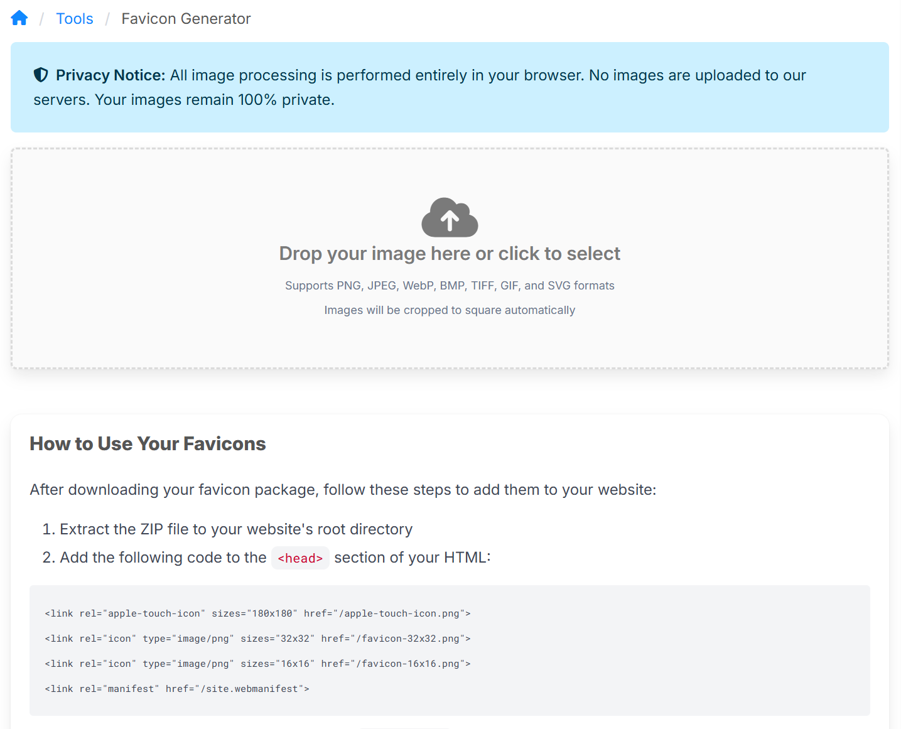

New (Free) Favicon / Icon Generator Available on appsoftware.com
Introducing Our Privacy-Focused Favicon Generator
We've added a new tool to our suite of free web utilities: a favicon generator that processes everything in your browser. If you've ever needed to create favicons for a website, you'll know it's one of those tasks that's tedious enough to be annoying but not quite complex enough to justify installing software. This tool aims to solve that problem.

What Makes It Different
The main distinction is privacy. Your images never leave your device. Everything happens client-side using browser APIs—there's no upload to a server, no temporary storage, no third-party processing. Upload an image, generate your favicons, download the package. Done.
This approach has practical advantages beyond privacy. There are no file size limits (beyond what your browser can handle), no queues, no rate limiting. The processing is instantaneous because it's all local.
SVG Support: The Technical Challenge
Supporting SVG input turned out to be more interesting than expected. Raster images (PNG, JPEG) are straightforward: crop to square from the centre, then downscale to each required size. But SVGs presented a different problem.
The obvious approach—render the SVG at the target size—produces poor results. A vector graphic rendered at 16×16 pixels looks pixelated because there simply aren't enough pixels to represent the shapes cleanly. The solution required working backwards: render the SVG at very high resolution (4096×4096 pixels), then progressively downscale to each target size.
But rendering at high resolution created another issue. How do you handle a non-square SVG? Cropping would clip parts of the graphic. Stretching would distort it. The solution was to pad the SVG within the square canvas, maintaining its aspect ratio and centering it with transparent padding. This preserves the entire vector graphic at maximum quality.
For raster images, we still use centre cropping because padding a photo or raster logo would introduce visible borders. The tool handles each input type appropriately.
The Multi-Step Downscaling Approach
When you need to go from 4096×4096 to 16×16, a single downscale operation can introduce artifacts. The tool uses progressive downscaling instead: 4096 → 2048 → 1024 → 512 → 256 → 128 → 64 → 32 → 16. Each step halves the dimensions, which browsers handle well with their high-quality interpolation.
This matters most for SVG sources, where preserving the sharpness of vector artwork through the downscaling process is essential. The results are noticeably better than single-step scaling, particularly at the smaller sizes (16×16 and 32×32) where every pixel counts.
What You Get
The tool generates seven files in a single ZIP package:
favicon.ico(32×32) for legacy browser supportfavicon-16x16.pngfor browser tabsfavicon-32x32.pngfor standard browser tabsapple-touch-icon.png(180×180) for iOS home screensandroid-chrome-192x192.pngfor Android home screensandroid-chrome-512x512.pngfor high-resolution Android devicessite.webmanifestfor Progressive Web App support
Extract these to your website root, add a few <link> tags to your HTML, and you're done.
Practical Use Cases
The tool is particularly useful for:
Converting logos: If you have your company logo as an SVG, you can generate a complete favicon package without image editing software. The SVG-to-favicon conversion preserves quality at all sizes.
Client projects: When building websites for clients, generating favicons is one of those final tasks that's easy to forget. Having a quick tool that requires no account creation or file uploads streamlines the workflow.
Progressive Web Apps: The web manifest file is included automatically, which is necessary for PWA requirements. One less file to create manually.
Rebranding: When updating brand identity across multiple websites, regenerating all favicon files quickly becomes important. This tool makes it a five-minute task rather than an hour-long process.
Technical Implementation
For those interested in the implementation details, the tool is built as a Svelte 5 custom element using TypeScript. It leverages the Canvas API for image processing and JSZip for creating the download package. The entire component is bundled as a single JavaScript file that can be included in any web page.
The choice of Svelte 5 was driven by its excellent TypeScript support and the custom elements feature, which allows the component to work within a server-rendered ASP.NET MVC application without requiring a full SPA framework. Shadow DOM is disabled to allow global styles (Bulma CSS, Font Awesome) to apply naturally.
Try It Out
The favicon generator is available at /tools/favicon-generator. No account required, no tracking, no uploads to servers. Upload an image (ideally an SVG of your logo), click generate, download the package.
If you're working with SVG logos, you'll likely notice the quality difference compared to other favicon generators. That's the benefit of the high-resolution rendering approach. For raster images, the multi-step downscaling still produces better results than single-step scaling, though the improvement is more subtle.
Looking Forward
This tool represents our approach to web utilities: privacy-focused, technically sound, and solving real problems without unnecessary complexity. We're continuing to add more tools that follow these principles.
If you encounter any issues or have suggestions for improvements, we'd appreciate hearing about them. The tool is actively maintained and we're responsive to feedback.
The favicon generator is part of our free tools collection at AppSoftware.